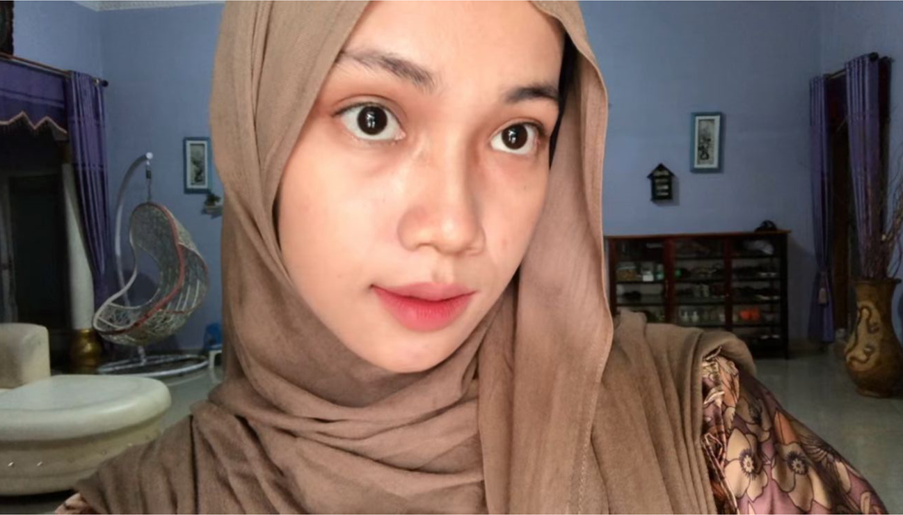

About
Me
Namaku Dinny Widialoka. Aku adalah pendengar yang baik dan suka mendengarkan cerita orang lain. Selain itu, membaca adalah salah satu hobiku, karena melalui cerita dan tulisan, aku bisa terus belajar dan memahami dunia dengan lebih dalam.
Our
Project
Buku adalah jendela dunia yang membawa kita menjelajahi tempat, waktu, dan pemikiran tanpa batas.
Perpustakaan adalah surga kecil bagi anak-anak, tempat mereka menemukan keajaiban dunia.
Di tengah keramaian dunia, perpustakaan megah dengan ribuan buku menjadi tempat yang tenang.
Contact
Us
Hessa Air Genting, Kec. Air Batu
Kabupaten Asahan, Sumatera Utara.
Phone. 082384452346.
Mail. dwidialoka@gmail.com.
Instagram. @dwidialoka.